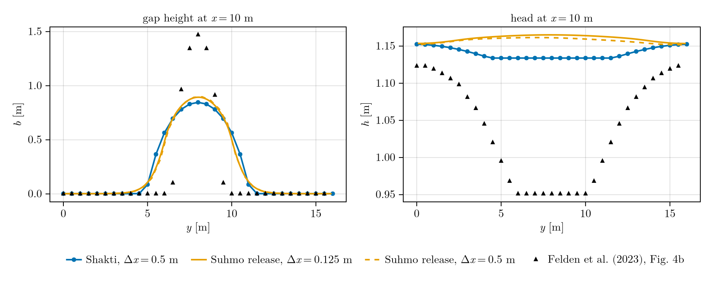

Suhmo channel-wall diffusion
Suhmo (Felden et al., 2023) adds a diffusion term ∇·(D ∇b) to the gap equation: water flowing through a channel melts its walls sideways, so channels widen instead of staying one cell wide. D follows from the flux and the head gradient, so it is large in channels and close to zero in the sheet. Pass diffusion_scheme = WithDiffusion(ls) to Simulation, where ls is a second linear solver for the gap system (CholeskyDirectSolver, CUDSSDirectSolver(grid; structure = :spd) or CGIterativeSolver).
Two linear solvers
A Suhmo run solves two linear systems, so it takes two solver objects:
- the head solve,
lsinside thePicardSolver(ps): the head equation. On the default sheet its matrix is not symmetric, so it needs an LU solver (LUDirectSolver,CUDSSDirectSolver) - the gap solve,
lsinsideWithDiffusion(ls): the diffusion ofb. Its matrix is symmetric positive definite, so the cheaper Cholesky (or CG) works
They are separate instances because each holds its own matrix and factorization, and each can use the method that suits its matrix. With ConsistentGapCoupling (the default) the gap system is solved at every Picard iteration, one extra solve per iteration.
The diffusion changes the result only where sqrt(D t) approaches the cell size: wide, wet channels on fine grids. This page runs such a case when the docs are built.
Felden et al. (2023) channelized test
Fig. 4 of (Felden et al., 2023) tests the diffusion with a moulin at (16, 8) m on a 64 m x 16 m bed sloping at 2 % under 500 m of ice, x = 0 the outlet. Without diffusion the channel below the moulin is one cell wide and 12 m deep; with it the channel is metres wide. Here Shakti runs the test with the parameters of Suhmo's shipped input (exec/0_convergence_channelized): the original SHAKTI sheet, b_min = 1 mm, Suhmo's friction heat 20² u_b² N and its tanh-ramped moulin, at Δx = 0.5 m in 1-hour steps for 30 days. The paper reaches steady state in about 20 days.
using Shakti
using CairoMakie
dxc = 0.5
nxc, nyc = round(Int, 64 / dxc) + 1, round(Int, 16 / dxc) + 1
gc = Grid(nxc, nyc, 64.0, 16.0)
zbc = [0.02 * x for x in gc.x, y in gc.y]
maskc = fill(GROUNDED, nxc, nyc)
maskc[1, :] .= OCEAN
pc = ModelParameters(b_min = 1e-3, rho_i = 910.0, nu = 1.787e-6, omega = 1e-3, br = 0.1, lr = 2.0, ct = 7.5e-8,
cw = 4.22e3, b_c = 0.0)
slc = LinearSlidingLaw(gc, fill(20.0, nxc, nyc)) # friction heat C² u_b² N with C = 20, as in Suhmo
sc = State(gc)
set_initial_conditions!(sc, gc, pc, slc, maskc, fill(2.5e-25, nxc, nyc), zbc, zbc .+ 500.0, fill(0.01, nxc, nyc),
fill(0.05, nxc, nyc), fill(1e-6, nxc + 1, nyc), zeros(nxc, nyc + 1), zeros(nxc, nyc),
zeros(nxc + 1, nyc), zeros(nxc, nyc + 1))
set_ieb_external!(sc, fill(1e-11, nxc, nyc)) # Suhmo's distributed input [m/s]
month = 2635200.0 # Suhmo's month [s]
mic = TanhRampMoulinMeltInput(gc, 16.0, 8.0, 1.0, 30.0, 0.5 * month, 0.1 * month; floor = 0.001)
simc = Simulation(gc, sc, 30 * 24, floattype(3600.0), pc, mic, slc;
ps = PicardSolver(200, 1e-6, LUDirectSolver(gc), gc),
diffusion_scheme = WithDiffusion(CholeskyDirectSolver(gc)), sheet = ShaktiSheet(original = true))
run!(simc)
simc.hs.ps.convergedtrueThe run warns once, in its first step: the gap starts at 1 cm, too small for the moulin's water, and the head drops below the bed. The gap opens within days, and no cell is in suction at the end:
Shakti.suction_cells(sc)0Shakti, Suhmo and the paper
The transect at x = 10 m (the blue line of the paper's Fig. 4a) compared with
- Suhmo as released (Zenodo, commit
001ef39), was run here with its shipped inputs5lev(Δx = 0.125m, the paper's resolution) and3lev(Δx = 0.5m, this run's), 125 days of 1-hour steps; - the paper's Fig. 4b ("with D"), digitized from the published figure (about ±0.025 m in
b, ±0.002 m inh).
The files are in docs/src/examples/input/SUHMO.
function read_transect(name)
rows = [parse.(Float64, split(l, ',')) for l in eachline(pkgdir(Shakti, "docs", "src", "examples", "input", "SUHMO", name))
if !startswith(l, '#') && !startswith(l, 'y')]
return (y = getindex.(rows, 1), b = getindex.(rows, 2), h = getindex.(rows, 3))
end
ix = argmin(abs.(gc.x .- 10.0))
cases = ["Shakti, Δx = 0.5 m" => (y = collect(gc.y), b = Array(sc.b)[ix, :], h = Array(sc.h)[ix, :]),
"Suhmo release, Δx = 0.125 m" => read_transect("suhmo_release_5lev.csv"),
"Suhmo release, Δx = 0.5 m" => read_transect("suhmo_release_3lev.csv"),
"Felden et al. (2023), Fig. 4b" => read_transect("felden2023_fig4b.csv")]
function half_width(y, b) # width where b > max/2, edges interpolated linearly
half = maximum(b) / 2
i1, i2 = findfirst(>(half), b), findlast(>(half), b)
edge(i, j) = y[i] + (half - b[i]) * (y[j] - y[i]) / (b[j] - b[i])
return edge(i2, i2 + 1) - edge(i1 - 1, i1)
end
[(case = name, peak_b = round(maximum(c.b), digits = 2), half_width = round(half_width(c.y, c.b), digits = 1),
head_dip = round(c.h[1] - c.h[argmax(c.b)], digits = 2)) for (name, c) in cases]4-element Vector{@NamedTuple{case::String, peak_b::Float64, half_width::Float64, head_dip::Float64}}:
(case = "Shakti, Δx = 0.5 m", peak_b = 0.85, half_width = 4.7, head_dip = 0.02)
(case = "Suhmo release, Δx = 0.125 m", peak_b = 0.89, half_width = 4.2, head_dip = -0.01)
(case = "Suhmo release, Δx = 0.5 m", peak_b = 0.9, half_width = 4.1, head_dip = -0.01)
(case = "Felden et al. (2023), Fig. 4b", peak_b = 1.47, half_width = 2.2, head_dip = 0.17)colors = Makie.wong_colors()
function texticks(vs) # LaTeX tick labels with the decimals the tick step needs
d = max(0, ceil(Int, -log10(vs[2] - vs[1]) - 1e-9))
fixed(v) = (t = string(round(v, digits = d)); rpad(t, findfirst('.', t) + d, '0'))
return [L"%$(d == 0 ? round(Int, v) : fixed(v))" for v in vs]
end
labels = [L"\mathrm{Shakti},\ \Delta x = 0.5\ \mathrm{m}", L"\mathrm{Suhmo\ release},\ \Delta x = 0.125\ \mathrm{m}",
L"\mathrm{Suhmo\ release},\ \Delta x = 0.5\ \mathrm{m}", L"\mathrm{Felden\ et\ al.\ (2023),\ Fig.\ 4b}"]
styles = [(color = colors[1], linestyle = :solid, marker = :circle),
(color = colors[2], linestyle = :solid, marker = nothing),
(color = colors[2], linestyle = :dash, marker = nothing),
(color = :black, linestyle = nothing, marker = :utriangle)]
fig = Figure(size = (900, 360))
axb = Axis(fig[1, 1]; xlabel = L"y\ [\mathrm{m}]", ylabel = L"b\ [\mathrm{m}]", title = L"\mathrm{gap\ height\ at}\ x = 10\ \mathrm{m}",
xtickformat = texticks, ytickformat = texticks)
axh = Axis(fig[1, 2]; xlabel = L"y\ [\mathrm{m}]", ylabel = L"h\ [\mathrm{m}]", title = L"\mathrm{head\ at}\ x = 10\ \mathrm{m}",
xtickformat = texticks, ytickformat = texticks)
for ((_, c), s, name) in zip(cases, styles, labels), (ax, v) in ((axb, c.b), (axh, c.h))
s.linestyle === nothing || lines!(ax, c.y, v; color = s.color, linestyle = s.linestyle, linewidth = 2, label = name)
s.marker === nothing || scatter!(ax, c.y, v; color = s.color, marker = s.marker, markersize = 8, label = name)
end
Legend(fig[2, 1:2], axb; orientation = :horizontal, merge = true, framevisible = false)
fig
Shakti and the released Suhmo agree: a channel 0.85 to 0.9 m deep and 4 to 4.7 m wide, with the head across it flat to within 2 cm. Suhmo gives the same at both resolutions. The published figure does not: its channel is 1.47 m deep and 2.2 m wide, and the head dips by 0.17 m over it. Neither code reproduces that with the released inputs.
Creep cutoff
Suhmo also limits creep closure in wide channels: ModelParameters(b_c = ...) with b_c > 0 selects CreepCutoff. On some datasets it lets a channel grow without bound, so use it with care and keep b_max = Inf: check_gap_height then stops the run when b exceeds the ice thickness by more than 1 km.